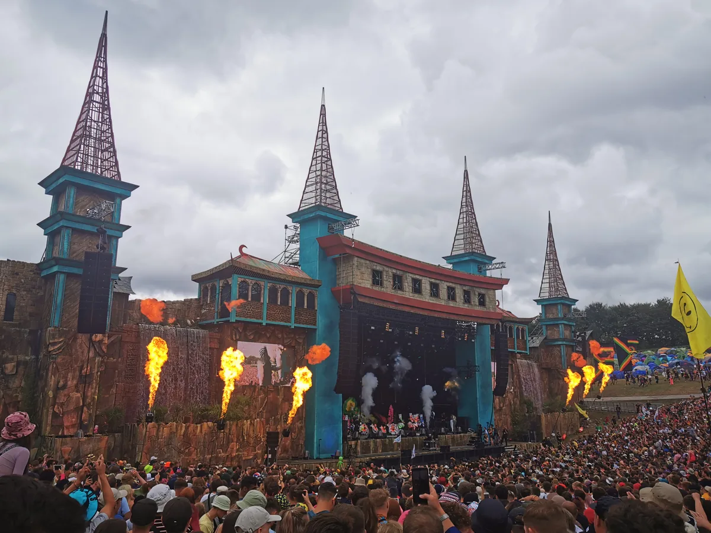
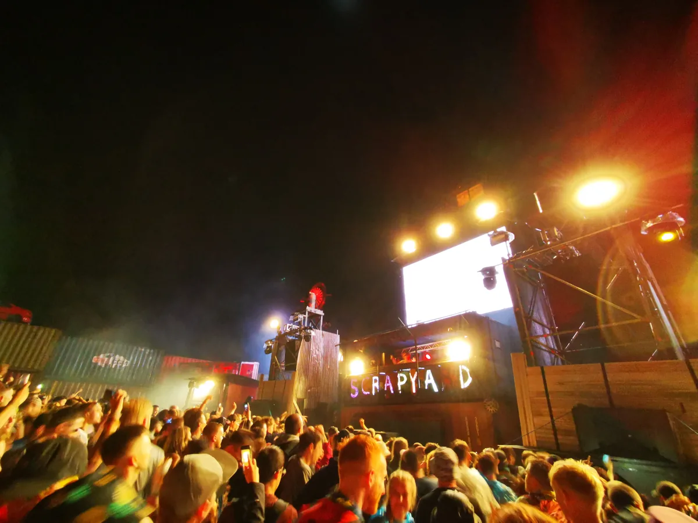

UK festival guide
Boomtown Festival: The City, Its Music and 2027 Dates
A five-day camping festival built as a fictional city, where drum and bass, soundsystem culture, techno, punk and live music occupy different districts.
A festival designed to be explored.
Boomtown is built to be wandered through rather than reduced to a running order. Large stages matter, but so do the streets between them, where actors, tiny rooms and pieces of the annual story turn a walk into part of the programme. Participation is optional. You can follow characters and missions or ignore the plot and use the city as a dense map of music.
Boomtown 2027.
Boomtown 2027 runs from Wednesday 11 to Sunday 15 August at Matterley Estate in Hampshire. The edition is called Chapter Six: Wild Style. The dates and chapter title are confirmed, while the artist lineup, district map and detailed transport operation remain pending.
| Fact | Current information |
|---|---|
| Dates | 11–15 August 2027 |
| Location | Matterley Estate near Winchester, Hampshire |
| Edition | Chapter Six: Wild Style |
| Format | Five-day, over-18 camping festival |
| 2027 lineup | Not yet announced |
| Planning horizon | Current site permission runs through 2030 |
The name needs one clarification. Boomtown Festival and Boomtown Fair refer to this Hampshire event. Boom Festival is a separate psychedelic festival in Portugal, and other events use the Boomtown name in Belgium and the United States.
A festival built as a city.
Boomtown divides its site into districts with their own architecture, venues and parts of a connected story. Street performers work between the stages, while opening and closing ceremonies give each annual chapter a beginning and an end. District names and geography can change, so an old map shows one edition only.

The design rewards curiosity. Some of the most memorable rooms are deliberately smaller than the headline arenas, and finding one can matter more than standing in front of the biggest stage. This is where the theatre and the music meet: scenic construction gives different sounds a physical address.
What music Boomtown plays.
Boomtown has a strong UK bass and soundsystem foundation. Drum and bass, jungle, dub, reggae and ska run through its history, alongside techno, house, UK garage, hip-hop, punk and live music. Calling it a drum and bass festival captures one important strand and misses the rest.
The Wailers set from 2014 is the most-viewed Boomtown performance video I found, and it points to the reggae and soundsystem roots. Altern 8, filmed by Boiler Room in 2023, is the rave side.
The programme works because those genres are not flattened into one main arena. A small electronic stage can sit beside a street built for performance, while larger spaces carry live bands or soundsystem culture. The exact allocations change with each chapter, so recent recordings are better evidence than an old list of stage names.
From 2009 to Matterley Estate.
Luke "Lak" Mitchell and Chris Rutherford founded Boomtown in 2009. The festival moved to Matterley Estate in 2011 and grew into a temporary city with tens of thousands of visitors. Its official history groups the years through 2019 as Book One, followed by a reset to Chapter One when the festival returned in 2022 after the pandemic interruption.

The site now has planning permission through 2030. The approved operation is commonly rounded to about 77,000 people, but that number is a planning ceiling with category-specific allowances, not a verified attendance total for every edition.
Who owns Boomtown.
Boomtown Festival UK Limited is the operating company. In 2022, Live Nation and Gaiety each acquired 18 per cent and SJM acquired 9 per cent, a combined 45 per cent at that time. Later ownership sits through company structures that require current filings to interpret, so it would be inaccurate to describe Boomtown as either wholly independent or wholly owned by one promoter.
Matterley Estate and a first visit.
Matterley is a working farm near Winchester at the western edge of the South Downs National Park. Its hills and natural bowls help separate the districts, but they also make the site physically demanding. Comfortable shoes, weather protection and time between distant stages matter more than an ambitious schedule.
Boomtown is an over-18 camping festival. Current travel instructions, entry rules and accessibility services should be checked against the 2027 key-information page when it is published. Use the official map and app for the current city rather than relying on a previous chapter.
Boomtown Festival FAQ.
Where is Boomtown Festival?
Boomtown is held at Matterley Estate near Winchester in Hampshire, England, on the western edge of the South Downs National Park.
When is Boomtown Festival 2027?
Boomtown 2027 runs from 11 to 15 August. The edition is titled Chapter Six: Wild Style.
What music is played at Boomtown?
The programme includes drum and bass, jungle, dub, reggae, ska, techno, house, UK garage, hip-hop, punk and live bands. Bookings and stage allocations change each year.
Is Boomtown a drum and bass festival?
Drum and bass is central to Boomtown, but the festival is not limited to it. Soundsystem music, electronic club styles, punk, hip-hop and live performance all have established places in the programme.
How many people attend Boomtown?
Planning documents allow an operation of roughly 77,000 people, depending on which categories are counted. That ceiling should not be treated as the verified public attendance for every edition.
What is the Boomtown storyline?
Each edition is presented as a chapter in a continuing fictional history. Districts, characters, street performers and ceremonies carry the plot, while visitors can choose how much they want to participate.
Is Boomtown the same as Boom Festival?
No. Boomtown is a multi-genre festival near Winchester in England. Boom Festival is a separate psychedelic festival in Portugal.
Sources.
Continue reading
Read next.
 Festivals~7 min read
Festivals~7 min readSziget Festival 2027: Dates, Music, Camping and Travel
Five days on Óbuda Island, with pop, rock and hip-hop beside club stages, theatre, circus and a rail link into Budapest.
Read article → Festivals~7 min read
Festivals~7 min readMonegros Desert Festival 2027: Date, History and Guide
One long electronic event on exposed land near Fraga, with roots in Florida 135 and stages running through the night.
Read article → Festivals~7 min read
Festivals~7 min readEXIT Festival: History, Petrovaradin Fortress and What Comes Next
From a Novi Sad student movement and the Dance Arena at Petrovaradin Fortress to the post-2025 global tour.
Read article → Rave spots~10 min read
Rave spots~10 min readBest Clubs in Berlin: The Legends and the Ones Still Open
The rooms that made Berlin a techno city, the famous clubs that closed, and the best clubs in Berlin that are still open.
Read article →